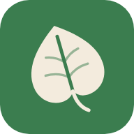

Informativa sulla privacy
PiantalAPP · aggiornata il 19 ottobre 2026
PiantalAPP è un'app gratuita e open source con le schede di cura di piante e fiori. Non ha account, non mostra pubblicità e non usa strumenti di analisi o di tracciamento. Questa pagina spiega quali dati escono dal tuo dispositivo e perché.
In breve
- Non raccogliamo dati personali e non abbiamo un nostro server.
- Le foto che scegli di far riconoscere vengono inviate a Pl@ntNet solo per l'analisi e non vengono conservate.
- Se ci scrivi dal modulo «Contattaci», il messaggio parte dalla tua app di posta e lo riceviamo come una normale email.
Cosa succede ai dati
| Quando | Cosa viene inviato | A chi |
|---|---|---|
| Usi «Riconosci» per identificare una pianta | La foto che scatti o scegli, ridimensionata, e l'indirizzo IP del dispositivo | Pl@ntNet (consorzio di ricerca pubblica francese, server in Europa). La foto viene analizzata in memoria e non viene salvata; il servizio registra solo data e ora della richiesta per le statistiche d'uso. Condizioni del servizio. |
| L'app aggiorna le schede delle piante | Una normale richiesta di download, con l'indirizzo IP del dispositivo | GitHub, dove sono pubblicate le schede. Informativa di GitHub. |
| Una foto di una pianta non è inclusa nell'app | Una richiesta di download dell'immagine, con l'indirizzo IP del dispositivo | Wikimedia Commons, da cui provengono le foto. Informativa di Wikimedia. |
| Ci scrivi dal modulo «Contattaci» | Il messaggio, il nome se lo inserisci e il tuo indirizzo email | Noi, all'indirizzo piantalapp@lcsoluzioni.it. Usiamo questi dati solo per risponderti e non li cediamo a nessuno. |
| Fai una donazione dalla pagina «Sostieni» | I dati del pagamento, inseriti nella finestra di Google Play | Google, che gestisce il pagamento. L'app e noi riceviamo solo la conferma della donazione, senza i tuoi dati di pagamento. Informativa di Google. |
Fotocamera e foto
L'app chiede di usare la fotocamera o di scegliere una foto solo quando tocchi «Riconosci». La foto non viene salvata dall'app e non viene usata per altri scopi.
Dati salvati sul dispositivo
L'app salva sul telefono una copia delle schede delle piante, così funziona anche senza rete. Non contiene dati personali e viene cancellata quando disinstalli l'app.
Bambini
L'app non è rivolta in modo specifico ai bambini e non raccoglie consapevolmente dati di minori.
I tuoi diritti e i contatti
Per qualsiasi domanda su questa informativa, o per chiedere la cancellazione di un messaggio che ci hai inviato, scrivi a piantalapp@lcsoluzioni.it. Hai inoltre il diritto di presentare reclamo al Garante per la protezione dei dati personali (garanteprivacy.it).
Modifiche
Se l'app cambierà il modo in cui tratta i dati, aggiorneremo questa pagina e la data in alto. Lo storico delle modifiche è pubblico nel repository del progetto.